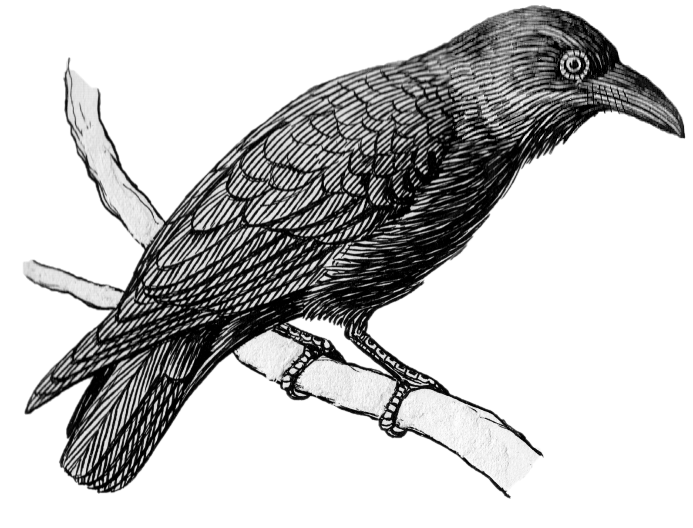
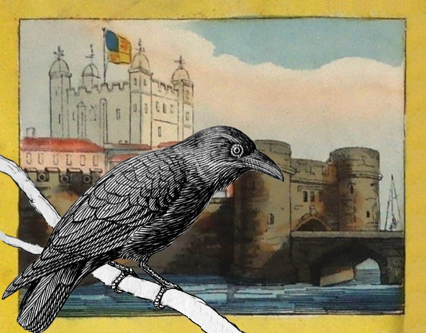

<div class="container">


<!--    -->
<div class="row h-100">
  <div class="col-9"></div>
  <div class="col-3 align-self-center">
    <div class="box sb3">

      Hello, I am a Raven and I live in the <span class="bold">Tower of London</span>. You may have heard of the Tower Ravens?

      Follow me and we will travel back in time to London long ago by bringing to life a board game made in the 1820s for children like you.

      But first you must make a choice…

      Would you like to play the board game or use it to explore the sites of London?
<br>


    <br>
      Choose by clicking on one of the buttons below.

      You can return to this screen at any time by clicking ‘Return to Welcome Screen’


      <button class="btn btn-primary  btn-sm listenBtn" (click)="play()">
        <svg class="bi bi-volume-down-fill" width="24" height="24" viewBox="0 0 16 16" fill="currentColor" xmlns="http://www.w3.org/2000/svg">
          <path d="M11.536 14.01A8.473 8.473 0 0 0 14.026 8a8.473 8.473 0 0 0-2.49-6.01l-.708.707A7.476 7.476 0 0 1 13.025 8c0 2.071-.84 3.946-2.197 5.303l.708.707z"/>
          <path d="M10.121 12.596A6.48 6.48 0 0 0 12.025 8a6.48 6.48 0 0 0-1.904-4.596l-.707.707A5.483 5.483 0 0 1 11.025 8a5.483 5.483 0 0 1-1.61 3.89l.706.706z"/>
          <path d="M8.707 11.182A4.486 4.486 0 0 0 10.025 8a4.486 4.486 0 0 0-1.318-3.182L8 5.525A3.489 3.489 0 0 1 9.025 8 3.49 3.49 0 0 1 8 10.475l.707.707z"/>
          <path fill-rule="evenodd" d="M6.717 3.55A.5.5 0 0 1 7 4v8a.5.5 0 0 1-.812.39L3.825 10.5H1.5A.5.5 0 0 1 1 10V6a.5.5 0 0 1 .5-.5h2.325l2.363-1.89a.5.5 0 0 1 .529-.06z"/>
        </svg>
      </button>
      <br>
      <button class="btn btn-primary raceBtn" (click)="playGame()">Race around the board</button>
      <button class="btn btn-primary" (click)="playExplorer()">Explore the board</button>

    </div>
  </div>
</div>
  
  </div>

